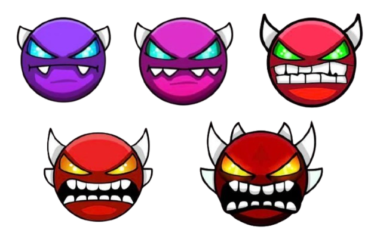

Більше інформації:
Щоб приступити до етапу проходження демонів тобі потрібно пройти хочаб Xstep із розділу офіційних рівнів.
В розділах Easy та Medium demons не буде дуже легких рівнів з реальною складністю Insane, або free рівнів задля підвищення скілу.
В кожній категорії буде по три рівня.
Кожен демон в цих топах це є моя думка, всі з них я бачив, або проходив.